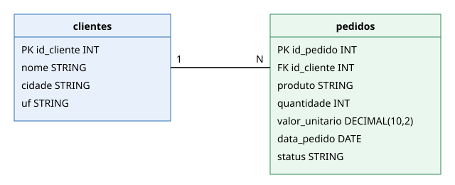
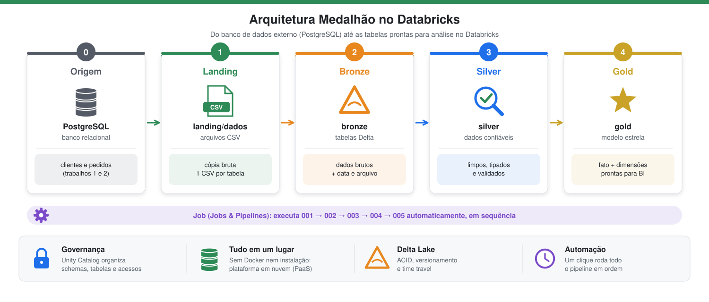

Contextualização do Trabalho
Trabalho 3 da disciplina Engenharia de Dados (Engenharia de Software – 5ª fase – SATC), professor Jorge Luiz da Silva. É um complemento dos trabalhos 1 e 2 (trabalho 1 e trabalho 2), em repositório separado.
Objetivo
Construir um pipeline de dados no Databricks Free Edition implementando a arquitetura medalhão (experiência PaaS): Landing → Bronze → Silver → Gold, com todas as etapas encadeadas em um Job de Jobs & Pipelines.
Cenário e conjunto de dados
Mesma loja virtual fictícia dos trabalhos 1 e 2. O banco relacional de origem LojaDB é um PostgreSQL externo ao Databricks, hospedado na nuvem (Supabase/Neon), criado pelo script sql/lojadb_postgres.sql. O Databricks só extrai os dados dele (notebook 002):
| Tabela | Conteúdo |
|---|---|
clientes |
4 clientes |
pedidos |
5 pedidos |
Modelo ER

Um cliente possui vários pedidos (relação 1:N por id_cliente).
DDL (PostgreSQL)
CREATE TABLE clientes (
id_cliente INT NOT NULL PRIMARY KEY,
nome VARCHAR(100) NOT NULL,
cidade VARCHAR(100),
uf CHAR(2)
);
CREATE TABLE pedidos (
id_pedido INT NOT NULL PRIMARY KEY,
id_cliente INT NOT NULL REFERENCES clientes (id_cliente),
produto VARCHAR(100) NOT NULL,
quantidade INT NOT NULL,
valor_unitario DECIMAL(10,2) NOT NULL,
data_pedido DATE NOT NULL,
status VARCHAR(20) NOT NULL
);
Arquitetura

Em poucas palavras: os dados saem do banco da loja, passam por quatro "estações" (landing, bronze, silver e gold) e, a cada estação, ficam mais organizados e confiáveis, como um minério que é extraído, lavado, refinado e transformado em joia. Um Job liga todas as estações e faz o caminho inteiro com um clique.
| Camada | Pergunta que responde | Em linguagem simples |
|---|---|---|
| Origem (PostgreSQL externo) | De onde vêm os dados? | O banco de dados da loja, fora do Databricks, com clientes e pedidos. |
| Landing | Os dados foram copiados? | Uma "caixa de entrada" com a cópia dos dados em arquivos CSV, sem nenhuma alteração. |
| Bronze | Os dados estão guardados com segurança? | Os mesmos dados, agora em tabelas Delta, que registram o histórico e protegem contra gravações pela metade. |
| Silver | Os dados estão corretos? | Os dados revisados: nomes padronizados, tipos corrigidos, sem duplicados e sem valores inválidos. |
| Gold | Os dados estão prontos para análise? | Os dados organizados para responder perguntas de negócio, como "quanto vendemos por estado?". |
Termos em linguagem simples
| Termo | Significado |
|---|---|
| Databricks | Plataforma na nuvem para trabalhar com dados; dispensa instalar programas no computador. |
| Notebook | Documento com blocos de código que são executados em ordem, com o resultado logo abaixo de cada bloco. |
| Schema | Uma "pasta" que agrupa tabelas de um mesmo assunto ou camada. |
| Volume | Uma "pasta" para guardar arquivos (como CSV) dentro do Databricks. |
| CSV | Arquivo de texto em formato de planilha: uma linha por registro e colunas separadas por vírgula. |
| Delta Lake | Formato de tabela que guarda o histórico de alterações e nunca deixa uma gravação pela metade. |
| Data Quality | Conjunto de verificações para garantir que os dados estão corretos e padronizados. |
| Fato | Tabela que registra os acontecimentos do negócio (cada pedido) e seus números (quantidade, valor). |
| Dimensão | Tabela que descreve o contexto dos fatos: quem comprou, o que comprou e quando. |
| Job | Uma "receita" que executa todos os notebooks na ordem certa, de forma automática. |
Notebooks
Executados em ordem, na pasta notebooks/: 001_preparando_ambiente, 002_extracao_para_landing, 003_landing_para_bronze, 004_bronze_para_silver e 005_silver_para_gold. O 006_destruindo_ambiente limpa o ambiente e não faz parte do Job.
Integrantes
- Thomas Jeferson da Silva Maggi
- Bruno Ghisi da Silva